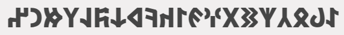
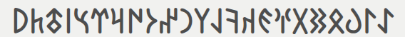
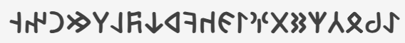
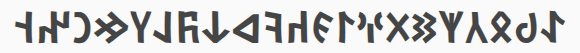
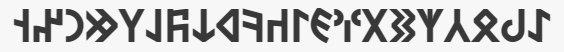
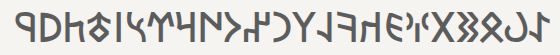
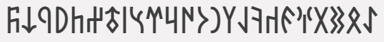

Göktürkçe Font İndir
Göktürkçe veya Göktürk alfabesi dediğimiz bu eski Türk alfabesi uluslararası "unicode" yazı standartları kapsamına alınmış olup, adı Old Turkic Alphabet^ dir. Göktürk alfabesinde yazılan yazıları okuyabilmek için aşağıdan herhangi bir yazıyüzünü indirip kurmanız yeterlidir. Kendi (windows) bilgisayarınızda yazabilmek için ayrıca şu klavyeyi de (link) indirip kurmanız gerekir.









